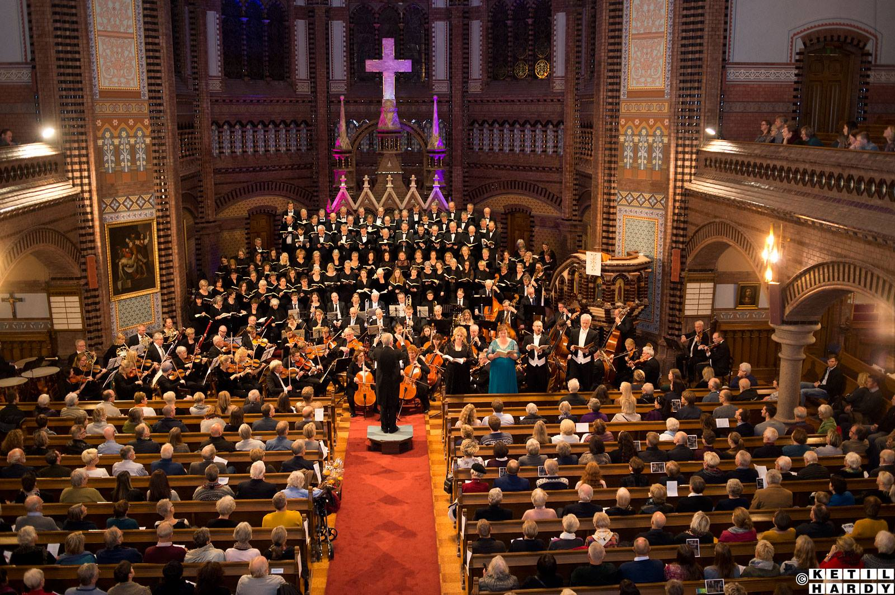

Neste konsert
Sommerkonsert med solister fra Asker kulturskole
søndag 7. juni 2026 · kl. 19.00
Østenstad kirke
Asker • symfonisk fellesskap
Asker Symfoniorkester samler sterke amatørmusikere, unge solister og publikum rundt levende klassiske konsertopplevelser.



Neste konsert
søndag 7. juni 2026 · kl. 19.00
Østenstad kirke
Kort fortalt
Et orkester med røtter i Asker siden 1972 — rom for store verk, nye samarbeid og musikere som vil utvikle seg sammen.


Video
Utvalgte opptak fra YouTube er lagt rett på forsiden, responsivt og uten ekstra distraksjoner.
Sesongen
Alt det viktigste samlet nedover siden — tydelig flyt, god lesbarhet og rask tilgang på mobil.
Symfonisk konsert
Nordiske farger og klassisk energi i et program for både kjente og nye lyttere.
Julekonsert
En førjulskveld med kjente melodier, orkesterklang og rom for høytidens ro.
Bli med
Vi ønsker nye strykere, blåsere og slagverkere velkommen til et varmt og ambisiøst miljø.
Send meldingStøtt oss
Din støtte bidrar til noter, lokaler, solister og konserter for lokalsamfunnet.
Slik kan du støtte